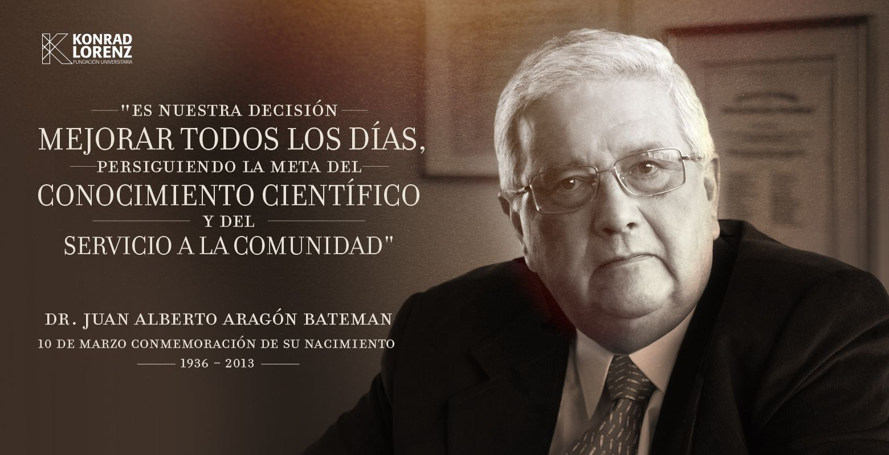

Los fundadores de la Fundación Universitaria Konrad Lorenz hacemos la siguiente declaración de principios, como expresión de la filosofía que rige las actividades y la existencia de nuestra institución. La Fundación Universitaria Konrad Lorenz tiene entre sus objetivos supremos el servicio a la sociedad y su actividad está orientada, por lo tanto, a la reafirmación de los valores esenciales de nacionalidad, a la promoción del desarrollo científico, tecnológico y humanístico del hombre colombiano, a la búsqueda de soluciones sociales que permitan una mayor extensión del bienestar individual y colectivo, así como a la protección conservación y aprovechamiento del medio ambiente, condición esencial de todos los anteriores objetivos. La Fundación Universitaria Konrad Lorenz es una institución filosóficamente liberal que rige sus acciones por los principios fundamentales de la tolerancia, la libertad académica, de investigación, de aprendizaje y de cátedra, dentro del respeto a la constitución, a la Ley, a la ética y al rigor científico. Quienes se forman en la Fundación Universitaria Konrad Lorenz no podrán ser discriminados por razones de raza, sexo, credo o nacionalidad, ni en general por causa alguna distinta de su capacidad, su rendimiento académico y su integridad moral. El carácter de función social que la Fundación ha elegido como uno de sus objetivos supremos implica que quienes lo integran: directivos, docentes, estudiantes y administradores, deben regir su conducta por claros criterios éticos que garanticen el respeto a los valores del hombre y de la sociedad y contraen la obligación de servir a la comunidad. La Fundación Universitaria Konrad Lorenz, como resultado de sus objetivos humanos y sociales, está abierta a todos los pueblos del mundo, a sus diversas fuerzas sociales, a todas las manifestaciones de la cultura y el arte, así como a los avances del conocimiento científico y tecnológico. La Fundación Universitaria Konrad Lorenz entiende que uno de los caminos básicos para encontrar soluciones válidas está en la investigación científica, tecnológica y cultural. La investigación por lo tanto, es una de las coordenadas básicas, al lado de la docencia. La Fundación Universitaria Konrad Lorenz entiende que la evaluación académica, dentro del campo general de la investigación científica, constituye el camino más seguro para el constante mejoramiento de su propia actividad académica. Por lo tanto, la evaluación académica y la autoevaluación institucional en todos los planos de su acción, constituye una de las actividades fundamentales de nuestra Institución. La Fundación Universitaria Konrad Lorenz, en cumplimiento de sus objetivos, asume como uno de sus parámetros curriculares el estudio sistemático y la búsqueda de soluciones para los problemas de la sociedad y el hombre colombiano. La Fundación Universitaria Konrad Lorenz tiene como uno de los objetivos fundamentales de todos sus programas académicos, la formación en sus estudiantes de un espíritu crítico, así como el desarrollo de sus capacidades intelectuales y morales, como vía para su perfeccionamiento personal y social. La Fundación Universitaria Konrad Lorenz, dentro del respeto a la Constitución y la Ley, es autónoma para darse y modificar sus estatutos, designar sus autoridades académicas y administrativas, crear y organizar sus labores formativas, académicas, docentes, científicas, culturales y de extensión otorgar los títulos correspondientes, seleccionar a sus profesores, admitir a su alumnos y adoptar sus correspondientes regímenes, arbitrar y aplicar sus recursos para su misión social y su función institucional.
Filosofía Institucional
